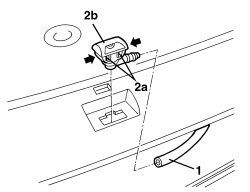

5050C10 REAR WINDOW WASHER JET - R+R CLEAN AND/OR POSITION
- Path
- Procedures > 50 AUXILIARY UNITS > 5050 SCREEN WASHERS AND HEADLAMP WASH/WIPE > 5050C REARSCREEN WASH/WIPE > 5050C10 REAR WINDOW WASHER JET - R+R CLEAN AND/OR POSITION
- Kind
- repair procedure (removal / refitting; the operation number is the code)
- Applies to
- all engines; all production periods
- Interactive page
- https://sloeber94.github.io/elrnDB-aBrrSpdr/en/#/946002311
Applies to: all engines; all production periods
 Removing
Removing
 Refitting
RefittingOp. 7015A05 TAILGATE LOWER INTERIOR PANEL-R R
Op. 7015A06 TAILGATE UPPER INTERIOR PANEL - R.R.
Op. 7210G76 REAR SPOILER - R.R.
Op. 5550D16 THIRD BRAKE LIGHT - R+R
1. Disconnect the pipe from the jet.
2. Using pliers, press the retainers (2a) and remove the jet (2b).

Applies to: all engines; all production periods
Refitting
Removing- Check that the jet is not damaged.
- Connect the pipe to the jet.
Op. 5550D16 THIRD BRAKE LIGHT - R+R
Op. 7210G76 REAR SPOILER - R.R.
Op. 7015A06 TAILGATE UPPER INTERIOR PANEL - R.R.
Op. 7015A05 TAILGATE LOWER INTERIOR PANEL-R R
- Check that the rearscreen washer jet is working.
Topics linked from this page (4)
- 5550D16 THIRD BRAKE LIGHT - R+R
- 7015A05 TAILGATE LOWER INTERIOR PANEL-R R
- 7015A06 TAILGATE UPPER INTERIOR PANEL - R.R.
- 7210G76 REAR SPOILER - R.R.